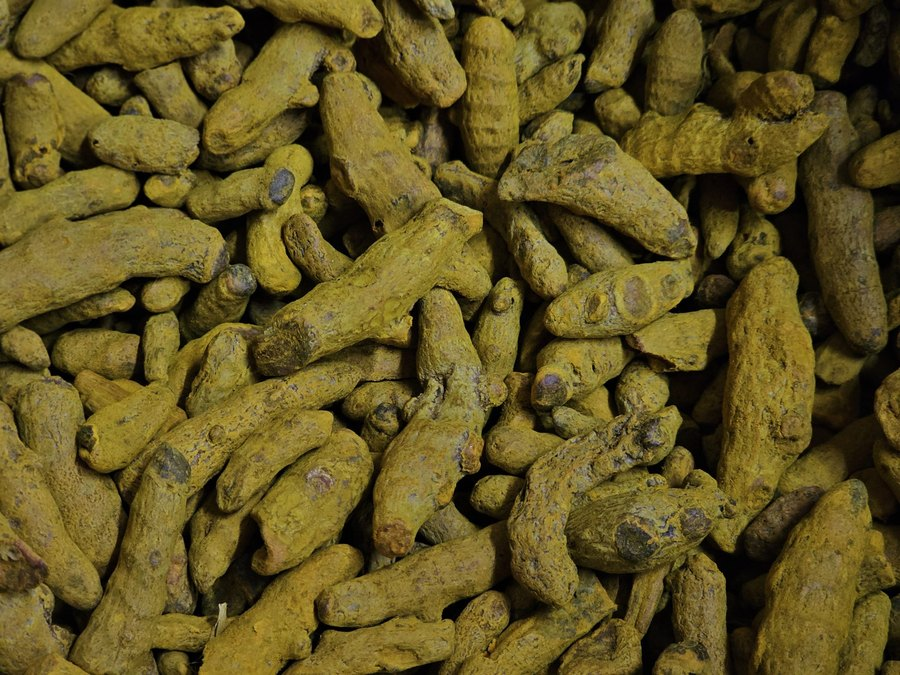

Curcumin for Memory: Does Turmeric Really Help the Brain?
Turmeric has been called a brain superfood for years. The truth is more nuanced. Curcumin, its active compound, does something interesting in studies, but a big absorption problem stands between the spice rack and your neurons.

Key takeaways
- Curcumin is the active compound in turmeric, a potent antioxidant and anti-inflammatory studied for brain health.
- One small 18-month trial found memory and attention gains in older adults using a high-absorption form. Larger trials are mixed.
- Absorption is the core problem. Plain turmeric delivers almost no usable curcumin to the brain.
- Cooking with turmeric is healthy but is not a reliable way to reach research-level doses.
- Promising, not proven. Treat curcumin as a reasonable add-on, not a memory cure, and check with your doctor.
Walk down any supplement aisle and you'll see turmeric marketed as a fix for nearly everything, memory included. There's a real scientific basis for the interest. Curcumin, the yellow pigment that gives turmeric its color, is one of the most studied natural anti-inflammatory compounds in the world. Chronic inflammation and oxidative stress are two processes strongly tied to cognitive aging, and curcumin acts on both in the lab. So the theory is sound. The question that matters is whether that translates into a sharper memory when a real person takes it. On this, the honest answer is a cautious "maybe," with a big asterisk about absorption.
What is curcumin, and how might it protect the brain?
Turmeric is a root in the ginger family, and it's been used in cooking and traditional medicine for thousands of years. Curcumin is just one component of it, making up roughly 2 to 5 percent of turmeric by weight. In cell and animal studies, curcumin does several things that look brain-protective. It reduces inflammatory signaling, neutralizes free radicals, and in some models it appears to interfere with the clumping of amyloid-beta, the protein that forms plaques in Alzheimer's disease. Researchers have long been curious about turmeric partly because some population studies in India, where turmeric intake is high, reported lower rates of Alzheimer's. That observation is interesting but far from proof, since diet, genetics, and lifestyle all differ across those populations.
Does curcumin actually improve memory in people?
Here's the study people cite most. In 2018, researchers at UCLA ran a small, randomized, placebo-controlled trial giving a highly absorbable curcumin formulation to older adults without dementia over 18 months. The curcumin group showed measurable improvements in memory and attention, and a subset who had brain scans showed less amyloid and tau buildup in regions tied to mood and memory. That's a genuinely encouraging result. But keep it in perspective. The trial had only about 40 participants, it used one specific high-absorption product, and results this promising need replication in larger groups before anyone can claim curcumin reliably boosts memory.
Zoom out and the broader literature is mixed. Some trials on cognition and mood show modest benefits, others show nothing beyond placebo. A large part of this inconsistency comes down to which curcumin formulation was used and whether enough of it actually reached the bloodstream. That leads straight to the real bottleneck.
COMPLEX
The memory formula we rate highest in 2026
Rather than a single spice extract, Advanced Memory Complex combines better-studied ingredients like citicoline, bacopa, and phosphatidylserine into one daily formula built for focus and recall.
See Today's Price →The absorption problem you have to know about
Curcumin has famously poor bioavailability. It barely dissolves in water, your liver breaks it down fast, and it clears from the body quickly. Swallow ordinary turmeric and very little curcumin ever reaches your blood, let alone crosses into your brain. This single fact explains why the golden latte trend, while pleasant, is not a serious brain intervention. To get meaningful amounts, supplement makers use tricks. Pairing curcumin with piperine, a compound from black pepper, can raise absorption substantially. Other products use phospholipid complexes, nanoparticles, or oil-based formulations to boost uptake several-fold. When you read a curcumin study, the formulation is not a footnote. It often decides whether the trial found an effect at all.
How much curcumin, and in what form?
Brain and cognition studies have used roughly 500 to 2,000 mg of curcumin per day, always in an enhanced-absorption form. There is no official dose for memory, because the trials needed to set one don't exist yet. If you're considering a supplement, the formulation matters more than the raw milligram number on the label. A product standardized for curcuminoids and built for absorption (with piperine or a recognized delivery system) is what the positive studies actually used. Turmeric powder from the kitchen, by contrast, is around 3 percent curcumin and poorly absorbed, so you'd need implausible amounts to match a study dose. For food-based brain support that has broader evidence, see our guides to the best brain foods and the Mediterranean diet and memory.
Safety and who should be cautious
Curcumin is generally regarded as safe, and turmeric as a food has an excellent safety record. Supplemental doses are usually well tolerated, though some people report mild digestive upset, nausea, or headache, especially at higher doses. There are real interaction concerns to flag. Curcumin can have a mild blood-thinning effect, so anyone on anticoagulants like warfarin should be careful. It may also lower blood sugar, which matters if you take diabetes medication, and it can interact with drugs processed by the liver. Piperine, added to boost absorption, itself changes how some medications are metabolized. If you take prescription drugs, are pregnant or nursing, or have gallbladder problems, talk to your doctor before starting a curcumin supplement. This is standard caution, and it applies here more than for a typical vitamin.
So, should you take curcumin for memory?
The reasonable position is measured optimism. Curcumin has a plausible mechanism, one encouraging small trial, and a strong safety profile, which together make it a defensible add-on for someone already doing the basics. It is not a proven memory treatment, and it should never replace the levers with real evidence: sleep, exercise, blood pressure control, and a good diet. If you want to try it, choose a high-absorption formulation and set realistic expectations. For the full evidence-based approach, start with our pillar guide on how to improve your memory, and if you're comparing formulas, our roundup of the best memory supplements of 2026 weighs the ingredients with the strongest human data. Always run a new supplement past your physician first, particularly if you take medication.
Frequently asked questions
Does curcumin improve memory?
Some human research is encouraging. A small 18-month trial found that a highly absorbable form of curcumin improved memory and attention scores in older adults without dementia, alongside reduced amyloid buildup on brain scans. But this was one small study, and larger trials have been mixed. Curcumin shows promise for memory, but the evidence is not strong enough to call it proven.
How much curcumin should I take for the brain?
Studies have used a wide range, commonly 500 to 2,000 mg of curcumin per day, almost always in a specially formulated, high-absorption form. Plain turmeric powder contains only about 3 percent curcumin and is poorly absorbed, so cooking with turmeric delivers very little. There is no established optimal dose for cognition. Talk to your doctor before supplementing, especially at higher doses.
Why is curcumin so poorly absorbed?
Curcumin has low bioavailability. It dissolves poorly in water, is rapidly metabolized, and is quickly eliminated from the body, so little reaches the bloodstream or brain from ordinary turmeric. Supplements try to fix this by pairing curcumin with piperine (black pepper extract) or using formulations like phospholipid complexes and nanoparticles that raise absorption several-fold.
Is turmeric the same as curcumin?
No. Turmeric is the whole spice, a root in the ginger family. Curcumin is one active compound within it, and it makes up only a small fraction of turmeric by weight. Most research on brain and inflammation uses concentrated curcumin extracts, not culinary turmeric. Eating turmeric in food is healthy but delivers far less curcumin than a standardized supplement.
Looking for brain support with stronger evidence?
A single spice rarely tells the whole story. See the memory formulas our editors rate highest for 2026, built around better-studied ingredients.
See the Top 5 Memory Formulas →Related: Quercetin for brain health · Best brain foods · Citicoline for memory · Best memory formulas of 2026